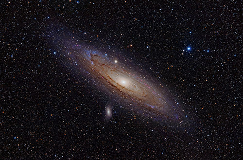

There are however yet other ways how one can see that in makes no sense whatsoever to assume that the universe is only about 6000 old. If that were true the furthest light source in the sky we could observe would be about 6000 lightyears away (i.e. the distance that light can travel in 6000 years). Yet our own milky way galaxy is already about ten times larger that! This means we could not see all the stars in our galaxy, nor could we see any other galaxies at all! This is in direct contradiction to observations such as the many beautiful images of far away galaxies we have from the Hubble space telescope.